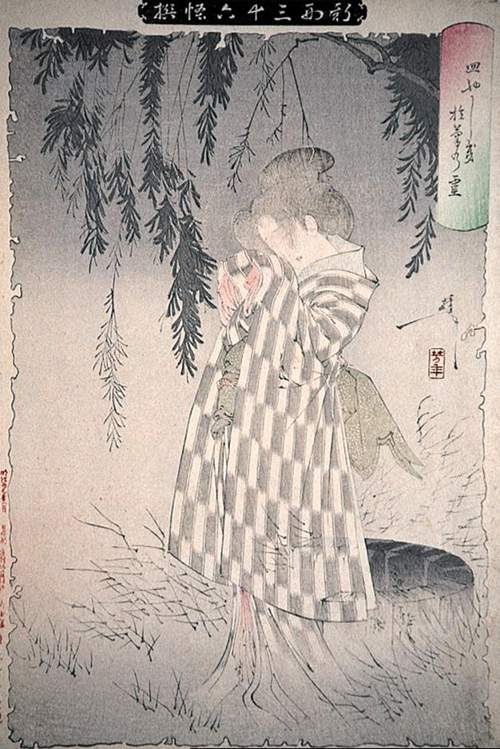

← 图鉴索引

井戸端に立つお菊の幽霊。袖をしぼり、切なげに泣いている。
著作者：月岡芳年／出典：親書誌：A80_prague_0013：皿やしきお菊の霊；サラヤシキオキクノレイ／日付：2011／資源識別子：A80_prague_0013_0001_0000
Copyright (c)2010- International Research Center for Japanese Studies, Kyoto, Japan. All rights reserved.